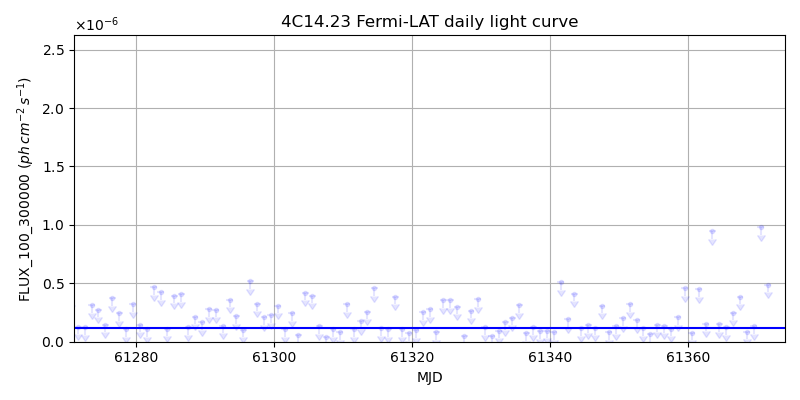
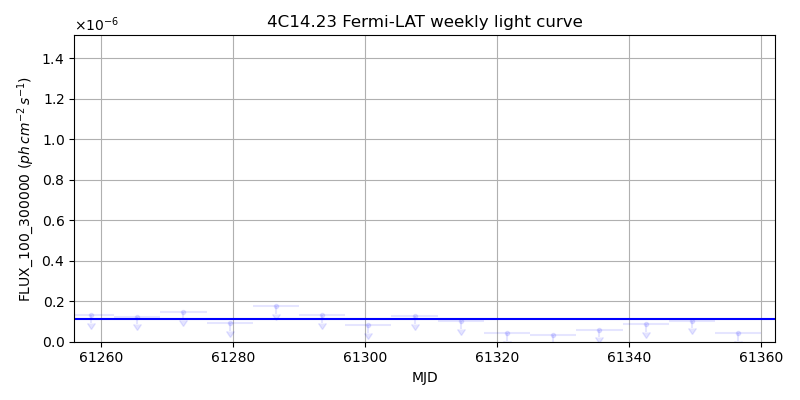
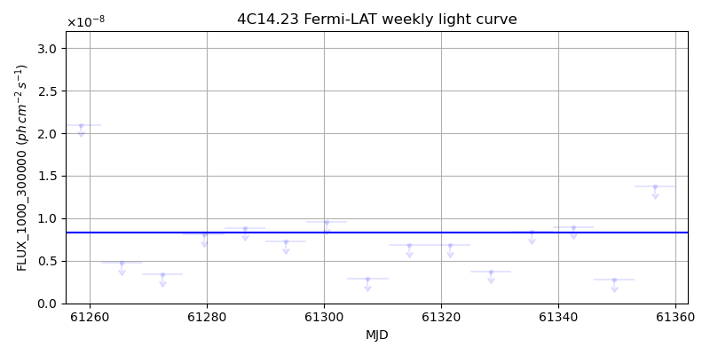

LAT Lightcurve site: https://fermi.gsfc.nasa.gov/ssc/data/access/lat/msl_lc/source/4C_14d23
NED: Query
Time of last update of this page: UT: 2026-11-28 16:18 (MJD: 61372.680)
| Property | Value |
|---|---|
| R.A. | 7:25:16.80 |
| Dec. | 14:25:12.0 |
| z | 1.039 |
| 3FGL SpectrumType | LogParabola |
| 3FGL PL Index | |
| 3FGL Flux_100_300000 | 1.14e-07 1 / (s cm2) |
| 3FGL Flux_1000_300000 | 8.34e-09 1 / (s cm2) |
| 3FGL Flux >200 GeV | 4.99e-12 1 / (s cm2) |
| 3FGL Extrap. Crab >200 GeV | 0.02 |
| 3FGL Flux After EBL Absorption >200GeV | 7.11e-14 1 / (s cm2) |
| 3FGL EBL Crab Fraction >200GeV | 0.00 |

| MJD | dMJD | Flux | dFlux | Frac3FGL | FracCrab>200GeV | EBLFracCrab>200GeV |
|---|---|---|---|---|---|---|
| 61367.50 | 0.50 | 3.87e-07 | 0.00e+00 | 0.00 | 0.00 | 0.00 |
| 61368.50 | 0.50 | 8.51e-08 | 0.00e+00 | 0.00 | 0.00 | 0.00 |
| 61369.50 | 0.50 | 1.34e-07 | 0.00e+00 | 0.00 | 0.00 | 0.00 |
| 61370.50 | 0.50 | 9.81e-07 | 0.00e+00 | 0.00 | 0.00 | 0.00 |
| 61371.50 | 0.50 | 4.89e-07 | 0.00e+00 | 0.00 | 0.00 | 0.00 |

| MJD | dMJD | Flux | dFlux | Frac3FGL | FracCrab>200GeV | EBLFracCrab>200GeV |
|---|---|---|---|---|---|---|
| 61335.50 | 3.50 | 5.93e-08 | 0.00e+00 | 0.00 | 0.00 | 0.00 |
| 61342.50 | 3.50 | 8.81e-08 | 0.00e+00 | 0.00 | 0.00 | 0.00 |
| 61349.50 | 3.50 | 1.04e-07 | 0.00e+00 | 0.00 | 0.00 | 0.00 |
| 61356.50 | 3.50 | 4.17e-08 | 0.00e+00 | 0.00 | 0.00 | 0.00 |
| 61363.50 | 3.50 | 8.02e-08 | 0.00e+00 | 0.00 | 0.00 | 0.00 |
| MJD | dMJD | Flux | dFlux | Frac3FGL | FracCrab>200GeV | EBLFracCrab>200GeV |
|---|---|---|---|---|---|---|
| 61367.50 | 0.50 | 5.69e-08 | 0.00e+00 | 0.00 | 0.00 | 0.00 |
| 61368.50 | 0.50 | 2.23e-08 | 0.00e+00 | 0.00 | 0.00 | 0.00 |
| 61369.50 | 0.50 | 2.39e-08 | 0.00e+00 | 0.00 | 0.00 | 0.00 |
| 61370.50 | 0.50 | 2.40e-08 | 0.00e+00 | 0.00 | 0.00 | 0.00 |
| 61371.50 | 0.50 | 2.63e-08 | 0.00e+00 | 0.00 | 0.00 | 0.00 |

| MJD | dMJD | Flux | dFlux | Frac3FGL | FracCrab>200GeV | EBLFracCrab>200GeV |
|---|---|---|---|---|---|---|
| 61335.50 | 3.50 | 8.44e-09 | 0.00e+00 | 0.00 | 0.00 | 0.00 |
| 61342.50 | 3.50 | 8.96e-09 | 0.00e+00 | 0.00 | 0.00 | 0.00 |
| 61349.50 | 3.50 | 2.76e-09 | 0.00e+00 | 0.00 | 0.00 | 0.00 |
| 61356.50 | 3.50 | 1.37e-08 | 0.00e+00 | 0.00 | 0.00 | 0.00 |
| 61363.50 | 3.50 | 3.27e-09 | 0.00e+00 | 0.00 | 0.00 | 0.00 |
--------------------------------------------------------- Using user-supplied coords: 7:25:16.80 14:25:12.0 2000 --------------------------------------------------------- FLWO UT night of: 2026-11-29 Local Sid. @ Midnight: 04:08 Sunset (-15.0) (local, UT): 18:31 01:31 Sunrise (-15.0) (local, UT): 05:53 12:53 Moonrise (local, UT): 21:57 04:57 Moonset (local, UT): Moon phase: 0.72 --------------------------------------------------------- AzTime LSID UT Obj_el Obj_az Mn_el Mn_az Sep. --------------------------------------------------------- 18:31 22:39 01:31 -24.8 52.6 -32.9 32.1 19.7 19:01 23:09 02:01 -19.6 58.1 -29.4 38.9 20.0 19:31 23:39 02:31 -14.0 63.0 -25.4 45.0 20.4 20:01 00:09 03:01 -8.2 67.5 -21.0 50.6 20.7 20:31 00:39 03:31 -1.2 71.6 -16.2 55.6 21.1 21:01 01:09 04:01 4.1 75.5 -11.1 60.2 21.4 21:31 01:39 04:31 10.3 79.3 -5.4 64.5 21.7 22:01 02:09 05:01 16.6 83.0 0.4 68.5 22.0 22:31 02:39 05:31 22.9 86.8 5.8 72.2 22.3 23:01 03:10 06:01 29.3 90.7 11.6 75.8 22.5 23:31 03:40 06:31 35.7 94.8 17.5 79.4 22.8 00:01 04:10 07:01 42.0 99.4 23.6 82.9 23.0 00:31 04:40 07:31 48.3 104.7 29.7 86.5 23.3 01:01 05:10 08:01 54.4 111.1 35.8 90.3 23.5 01:31 05:40 08:31 60.2 119.3 42.0 94.4 23.7 02:01 06:10 09:01 65.4 130.4 48.1 99.1 23.9 02:31 06:40 09:31 69.7 146.0 54.2 104.7 24.1 03:01 07:10 10:01 72.3 167.1 60.1 111.7 24.3 03:31 07:40 10:31 72.4 191.2 65.6 121.1 24.4 04:01 08:10 11:01 70.0 212.7 70.5 134.7 24.6 04:31 08:40 11:31 65.8 228.6 74.0 154.7 24.8 05:01 09:11 12:01 60.6 240.0 75.2 181.1 24.9 05:31 09:41 12:31 54.8 248.3 73.6 206.8 25.1 05:53 10:02 12:53 50.5 253.2 71.0 221.2 25.2 --------------------------------------------------------- Dark hours >55 deg.: 0.00